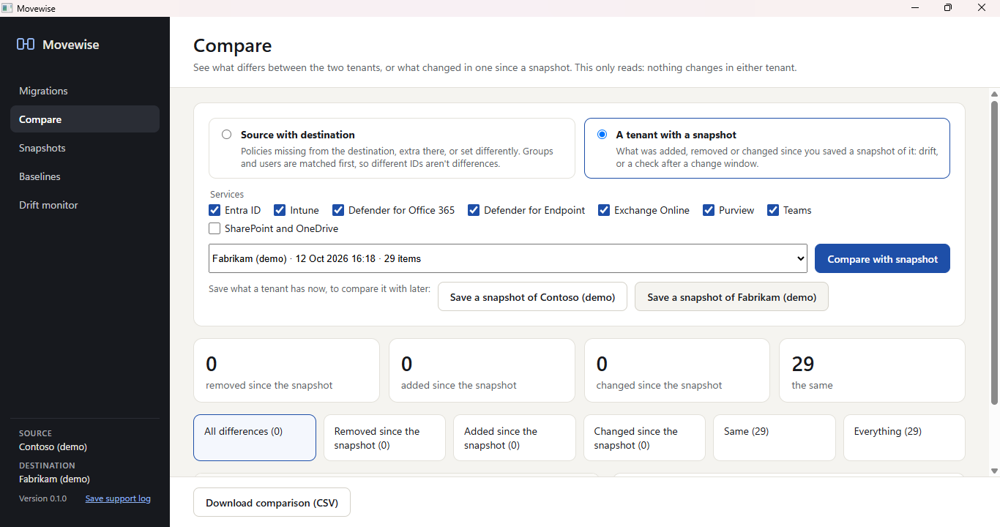

Compare two tenants
Compare shows which policies and settings are only in one tenant and which are set differently. The source's policies are first put in the destination's terms, matching groups, users and locations as a migration would, so a group with a different ID isn't reported as a difference. Each item shows both versions side by side, with only the settings that differ, and the comparison exports to CSV.

Snapshots
A snapshot is a point-in-time copy of a tenant's configuration. Take one before a change window and compare the tenant with it later to see what was added, removed or changed. Snapshots are stored as files on your PC, in %LOCALAPPDATA%\MovewiseData\Snapshots, until you delete them.
Drift monitor
Check now compares every signed-in tenant with its latest snapshot and lists each policy or setting that changed since, with the settings that differ. Open any item in Compare to see both versions side by side, or to restore it.
Restore from a snapshot
After comparing a tenant with a snapshot, restore recreates what was removed and puts changed settings and policies back as they were. It runs the same pre-flight checks as a migration, then deploys as a run you start and can roll back. Restored policies come back in report-only or test mode unless you choose otherwise. A restore never deletes anything added since the snapshot, and a snapshot is only restored into the tenant it was taken of.
Baselines
A baseline is a set of policies saved once from a migration, along with what they point at in the template tenant. Apply it to other tenants later without signing in to the template again: on the Connect screen, a baseline can be the source once the destination is signed in. Useful for MSPs and organisations that roll the same security standard out to many tenants.